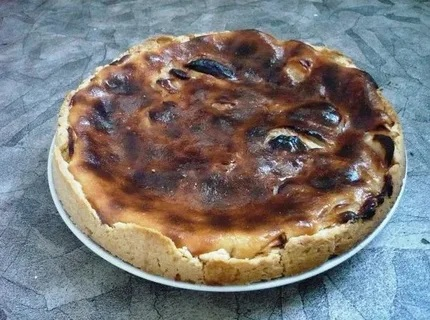

Fragenwork - это справочник распространенных ошибок в различных сферах. Мы собираем наиболее частые проблемы и их решения, чтобы помочь вам избежать неприятностей. Вне зависимости от того, работаете ли вы с техникой, программируете, готовите или занимаетесь спортом, здесь вы найдете полезные советы. Четкие объяснения, простые решения и удобная навигация. Никаких сложностей - только полезные знания!
Пошаговая инструкция, если вы хотите, чтобы ваш пирог стал "чёрным" и "крутым". Это делается очень просто:
Вот и всё! Теперь вы знаете, как правильно сжечь пирог. Удачи в ваших кулинарных экспериментах!
